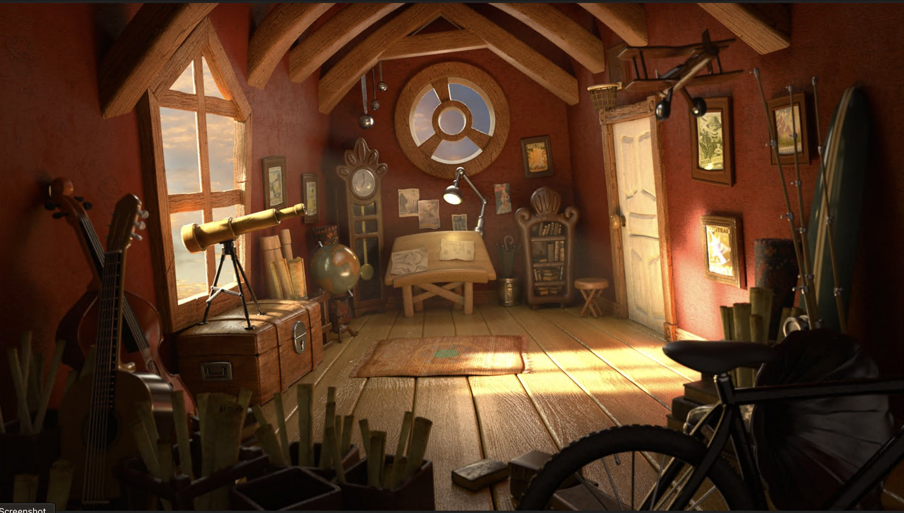
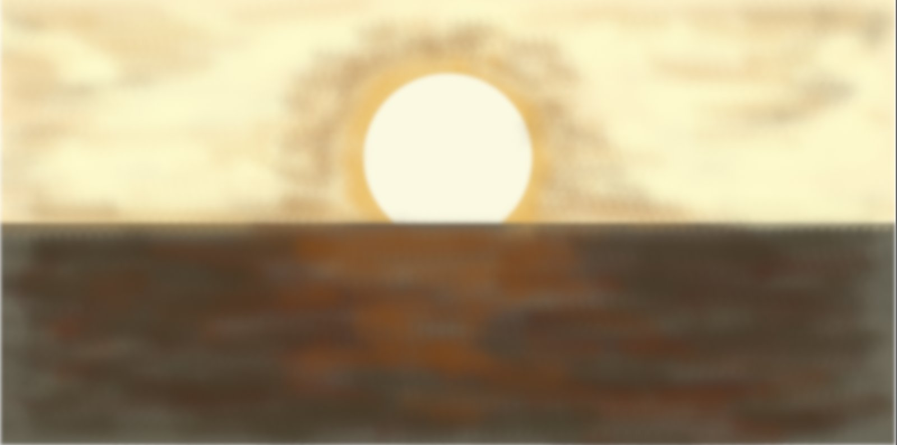
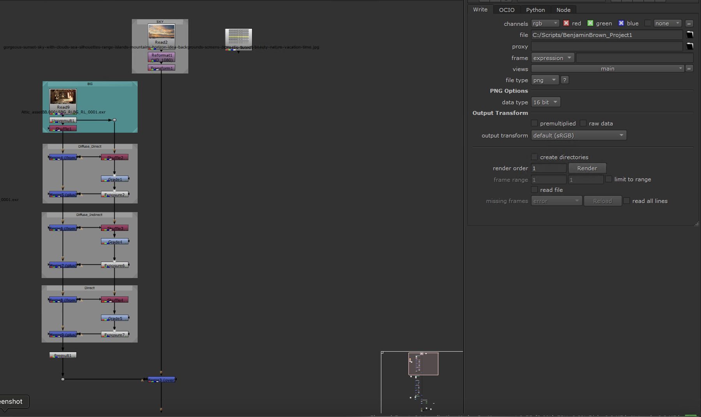
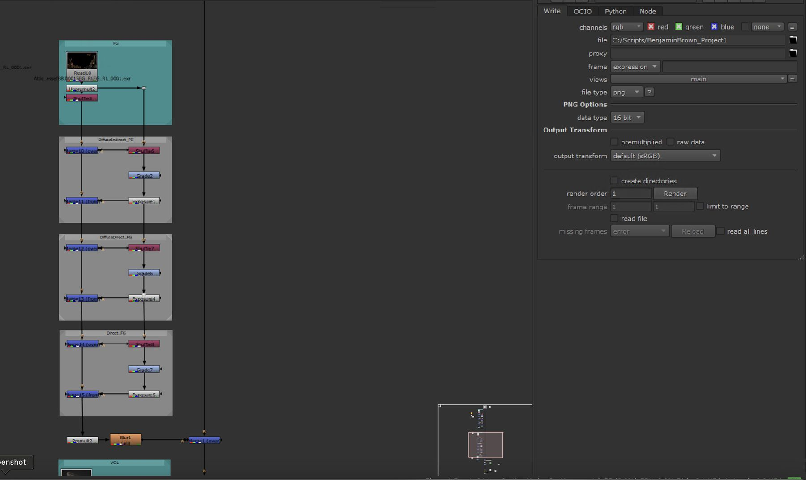
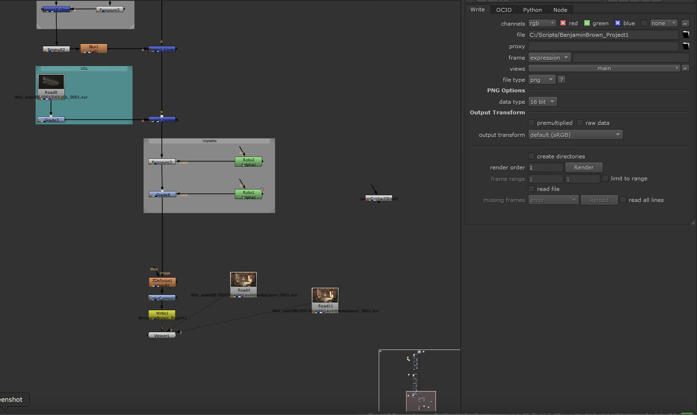

Lighting Study · [2025]
Sunny By the Seaside
A lighting study rendered in Maya to a multi-pass composite in Nuke.

Overview
Sunny By the Seaside is a lighting study, not a game — the goal was practicing how light alone can establish mood and guide a player's eye through a space. The render was Rendered in Maya and composited in Nuke, then taken into Nuke for a multi-pass composite where the final balance of light, atmosphere, and focus was tuned.
Lighting Setup
Rather than relying on a stock HDRI, I built a custom one specifically for this shot to control where the warm key light sits relative to the room's windows.

Compositing Breakdown
The render wasn't comped as a single flattened image — it came out of Unreal split into separate light contributions, then rebalanced and finished in Nuke.
Background & sky
The background render is split into Diffuse Direct, Diffuse Indirect, and Direct passes, each pushed through its own grade and exposure before being recombined. That separation makes it possible to push the indirect bounce light brighter or darker independently of the direct key light, without going back into Unreal to re-render. A separate sky plate is reformatted and merged in behind the geometry.

Foreground
The foreground objects — the desk, telescope, and instruments closest to camera — go through the same direct/indirect/direct split as the background, then a premult and a soft blur before merging over the background. The blur helps separate the foreground read from the background plate rather than letting both sit at the same apparent sharpness.

Volumetrics, vignette & finishing
A dedicated volumetrics pass is screen-blended on top to add atmospheric scatter in the light shafts. From there, a vignette is built from two roto shapes feeding their own grade and exposure nodes — hand-placed darkening rather than a generic radial falloff — so the corners pull the eye toward the window without it reading as an obvious filter. A depth-based defocus and a final color correct finish the shot before the write node.
